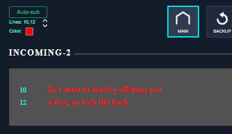
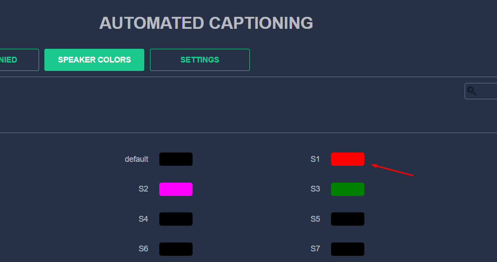

STL version v1.0.0.3
Issues in Milestone:
---
- #7 DataRouter. Live subtitles rework line numbers and color
Features:
---
Subtitles Live Service (ALSService)
The calculation of lines for generating subtitles has been changed. Instead of using 3 lines by default, the number of lines is calculated based on those specified in the configuration file:
`ApplicationSettings.json`
"subtitle_lines": "8,14"
DataRouter. Changing Line Numbers for Subtitles Live Service
- Added display of line numbers from ALS Service settings. Added "Up" and "Down" buttons to the subtitles panel
- Minimum value - 2
- Maximum value - 22
- When you click on the "Down" button, the minimum line increases by +2. All subsequent lines are recalculated taking into account +2 from the original line
- When you click on the "Up" button, the minimum line is reduced by 2. All subsequent lines are recalculated taking into account +2 from the original line
Example:
1. Current value is "4, 20"
2. Click on the "Down" button
3. New value "6, 8"
DataRouter. Changing subtitle color for Subtitles Live Service
A button has been added to the subtitle panel interface to change the color of Auto-Sub subtitles for speaker "S1".
When you click on the color change button, the following color is set from the list:
White/Yellow/Red/Blue/Magenta/Cyan/Black